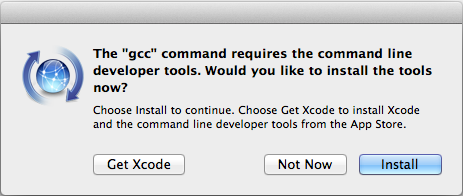

Engines Ready: 0 to Ruby Dev on OSX 10.9 (Mavericks)
Step one for building software is having all the necessary kibbles and bits installed. Sadly, this step trips many newcomers up. Documentation is spread all over and many sources are out of date or otherwise unusable for a new developer.
I hope to keep this up-to-date as a simple walkthrough for how I set new machines up. Hopefully it can help someone else out, too.
We'll be installing all the following software on a fresh & clean OSX Mavericks format:
- XCode
- Homebrew
- Git
- RVM
If you have trouble, either with an installation or with following along, drop me a line!
XCode
XCode is a massive package from Apple including commonly-used libraries and an IDE for iOS & OSX development. The IDE isn't necessary unless you're planning on building iOS apps or Mac desktop apps, but many of the libraries are mandatory for development. Thakfully, Apple released the XCode Command Line Tools package to allow developers without the need for their XCode IDE to get the packages they need.
A lot of people will have XCode installed without even knowing it. If you're not on a fresh install, run the following command in your terminal:
$ xcode-select -p
If you see anything other than a filepath (like /Library/Developer/CommandLineTools/), you need to install XCode.
Apple was also nice enough to create an automated installer for the XCode CLT. If you try to run any command that needs XCode (try git) and it's not installed, you'll see the following prompt:

If you think you'll be doing Apple-specific development in the near future (ie: iPhone, iPad, Mac native apps), click on the "Get XCode" button to get the full package. WARNING - it's big. If you're planning on doing web development, or just want a quicker setup experience, click on the "Install" button. You'll have to except an EULA, and then XCode will do its thing and install its command line tools on your machine.
Of course, if this has all been too much for you already, you can click "Not Now". XCode will still be here when you're done on Facebook.
Homebrew
Homebrew is a package manager for OSX, and provides similar functionality to apt-get or yum on Linux systems. It maintains a library of commonly-sought applications accesible by shortcut names and makes it a breeze to install, upgrade and remove them as desired. It's not necessary, but it's SUPER helpful! You'll get quickly tired of looking up download repositories without it.
To install, open a new terminal and run the following command:
$ ruby -e "$(curl -fsSL https://raw.githubusercontent.com/Homebrew/install/master/install)"
This pulls the Homebrew install script from their GitHub and runs it using Ruby on your machine. Thankfully, a Ruby build is installed by default on newer versions of OSX!
Homebrew will take a few minutes to install and may require you to enter your password or monitor another installation. Be patient, and when it's done, type:
$ brew doctor
This is a helpful utility that will check your Homebrew setup to make sure everything's smooth. If you get any response other than Your system is ready to brew, check this post out to see a quick fix for the most common Homebrew error. If that's not the fix for you, head to Google with your warning text in hand.
Git
Now that we have Homebrew, life's a breeze! To install the latest version of Git, simply run:
$ brew install git
Wait a minute for Homebrew to work its magic and then ensure your Git installed correctly with
$ git --version
You should get a reply of git version 2.1.0 or later.
NOTE: If your git version shows as lower than 2.1.0, take a look at my Homebrew & your PATH post.
RVM
Ruby Version Manager is an invaluable utility for managing Ruby & Rails installations. For a hobbyist it's a good way to make sure your Ruby & Rails stays up to date. For serious development, it lets you test your apps against older versions of Ruby and lets your create custom environments to test in so you don't ruin your production app with sandbox code.
To install RVM (and the latest Ruby & Rails versions), run the following commands:
$ curl -sSL https://get.rvm.io | bash -s stable --rails --autolibs=homebrew
When installation finishes, RVM will ask you to run another command, something like:
$ source /Users/yourname/.rvm/scripts/rvm
MAKE SURE YOU DO THIS. This will add RVM to your PATH so you can use it from your terminal.
After both your installation and the secondary script have run, close your current Terminal instance, restart Terminal, and try both ruby -v and rails -v. Your versions should be 2.1.2 and 4.1.6 or greater.
Ready for Battle!
With these pieces in place, my computer's a lean mean coding machine! To finalize, I'll install a graphical text editor (I recommend Sublime Text or Atom) and Google's Chrome browser for debugging. I'll also add my dotfiles to make things a little prettier - I'll share some prompt setup tips later on.